형상 검토 후 채택 여부 결정. 미채택 결과도 보존. 모델·프롬프트·배치 수정 없음.
독립 가구 전체 윤곽. 가는 다리와 책 중복 위험.
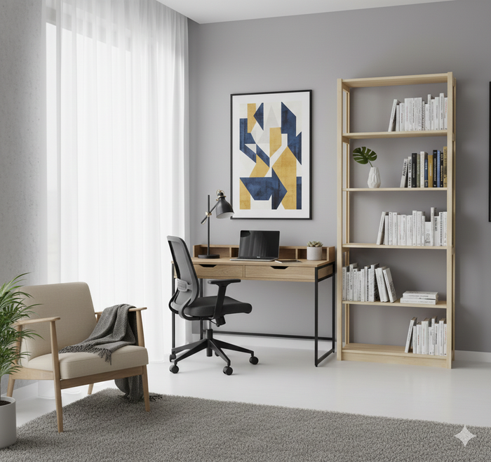
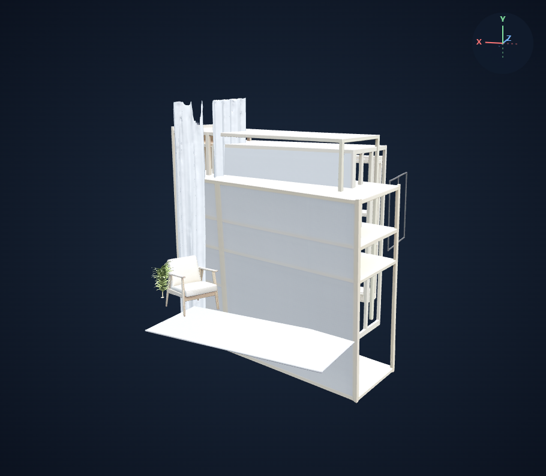
3D 열기{'bookcase': 1, 'bookshelf': 1, 'carpet': 1, 'chair': 2, 'computer': 1, 'computer desk': 1, 'curtain': 1, 'table': 1, 'home office': 1, 'office': 1, 'office chair': 2, 'office desk': 1, 'office supply': 7, 'picture frame': 2, 'plant': 3, 'room': 1, 'shelf': 7, 'shelve': 1, 'swivel chair': 1}
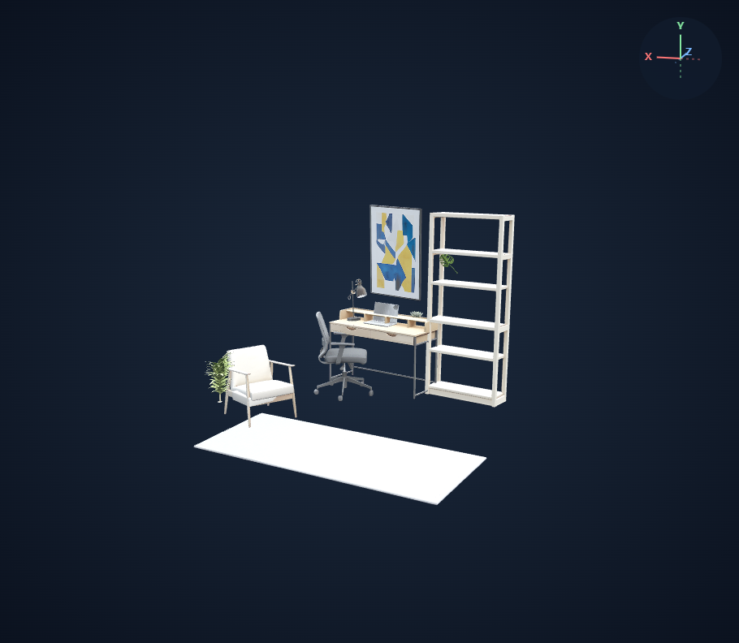
3D 열기{'desk': 1, 'chair': 2, 'bookshelf': 1, 'artwork': 1, 'lamp': 1, 'computer': 1, 'cushion': 1, 'rug': 1, 'plant': 3}
미채택 · 주요 가구는 양호하지만 원목 서재가 더 풍부한 표현 · 동일 카메라 비교 및 정면/좌우 45도에서 책상 1개, 의자 2개, 책장 1개의 주요 형상 확인. 기본 RAM++ 36개 객체에서 비전 furniture 12개로 감소. 베이스라인의 bookcase/bookshelf/shelf/shelve 및 책상·의자 동의어 중복이 줄고 주요 가구가 드러남.
책장 속 책이 누락되고 식물에 화분이 없어 공중에 떠 보임. 액자는 배경 벽 없이 남고 러그는 하얀 판처럼 표현됨. 원본보다 색이 밝음. 수동 객체 삭제·형상·배치 수정 없음.
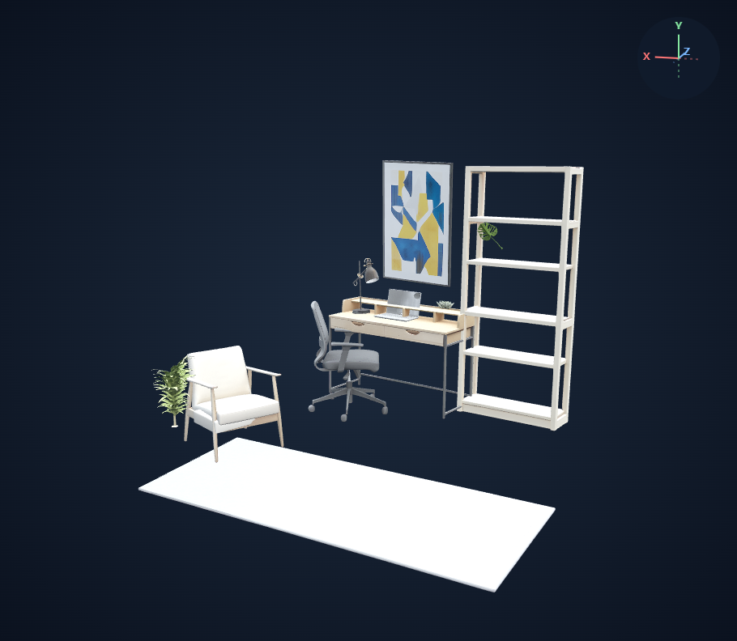
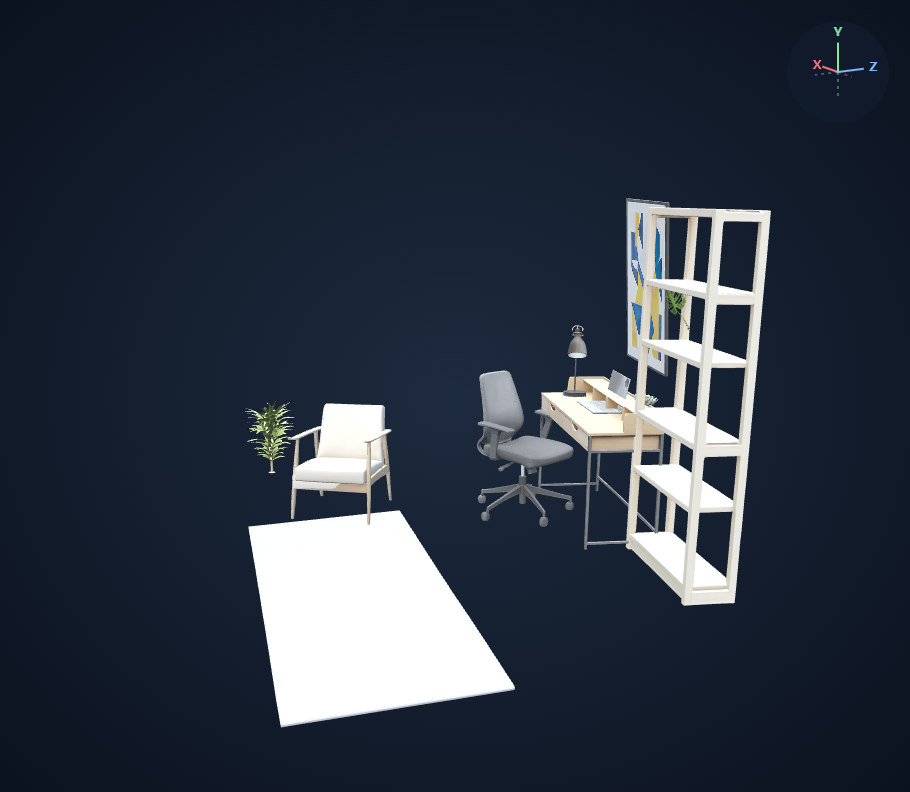
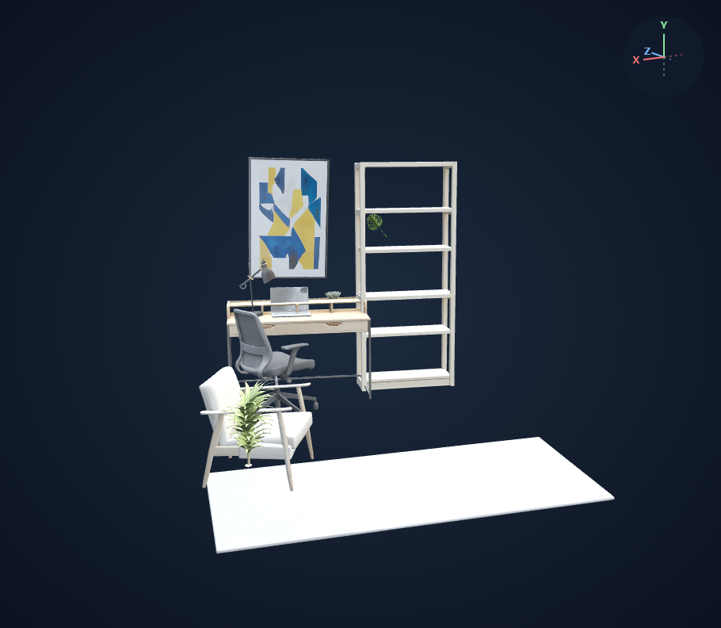
주요 가구가 분리되고 다리와 몸통이 보임. 식물·책 소품 중복 위험.
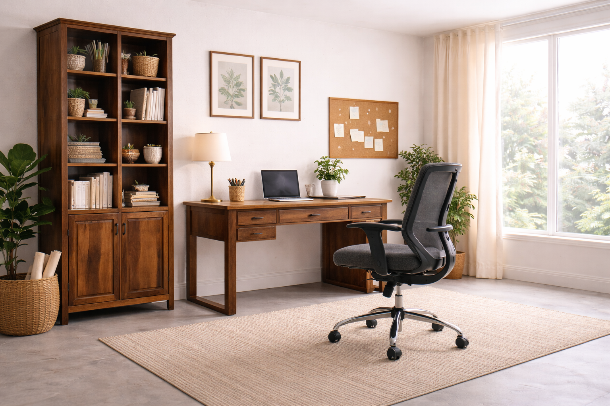
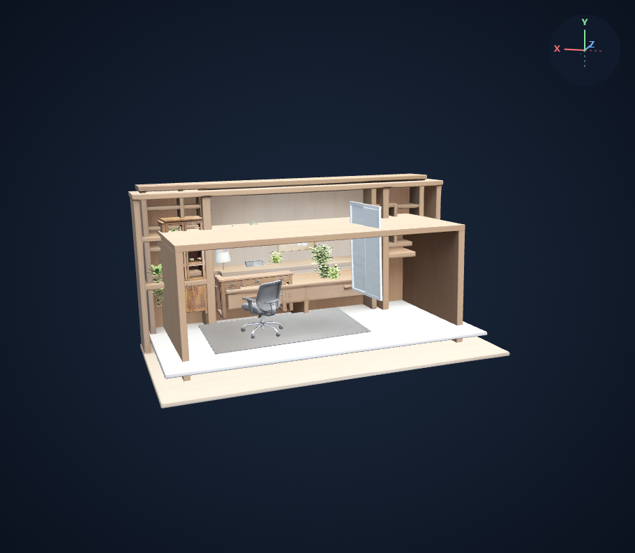
3D 열기{'bookcase': 1, 'bookshelf': 1, 'lamp': 1, 'cabinet': 4, 'carpet': 1, 'chair': 1, 'computer': 1, 'computer desk': 1, 'table': 1, 'home office': 1, 'office': 1, 'office chair': 1, 'office desk': 1, 'office supply': 8, 'plant': 17, 'room': 1, 'swivel chair': 1, 'window': 1}
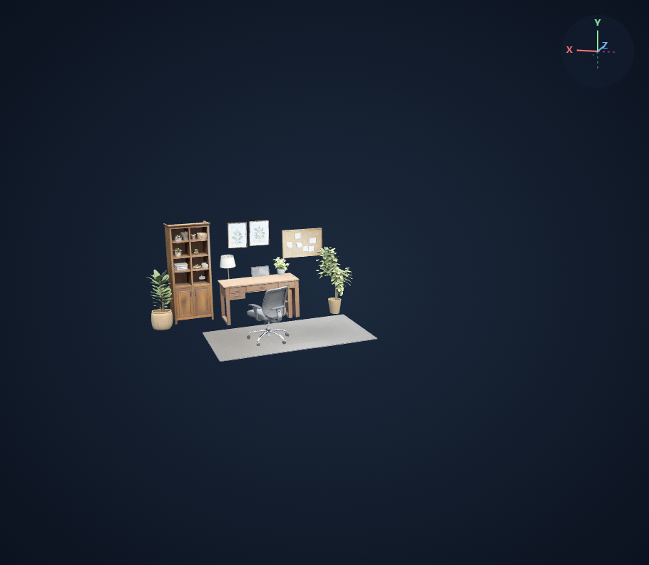
3D 열기{'desk': 1, 'chair': 1, 'bookcase': 1, 'lamp': 1, 'computer': 1, 'potted_plant': 13, 'corkboard': 1, 'frame': 2, 'rug': 1}
최종 1번 채택 · 원목 서재 · 정면/좌우 45도에서 책상·의자·책장 주요 형상 확인. 44개에서 22개로 감소하며 desk/chair/bookcase 각 1개 생성. 거대한 중복 구조가 제거되어 가구 구성이 드러남. 밝은 서재보다 원목 색과 책장 안쪽 소품 표현이 풍부함.
책상 다리 일부가 판형으로 변형됨. 화분·소품의 높이 오차와 겹침, 벽 없는 액자·보드 부유가 남음. 완전한 형상/배치 복원이 아님. 원본 URL 파일명 ChatGPT_Image에 근거해 AI 생성 이미지로 추정. 수동 객체 삭제·형상·배치 수정 없음.
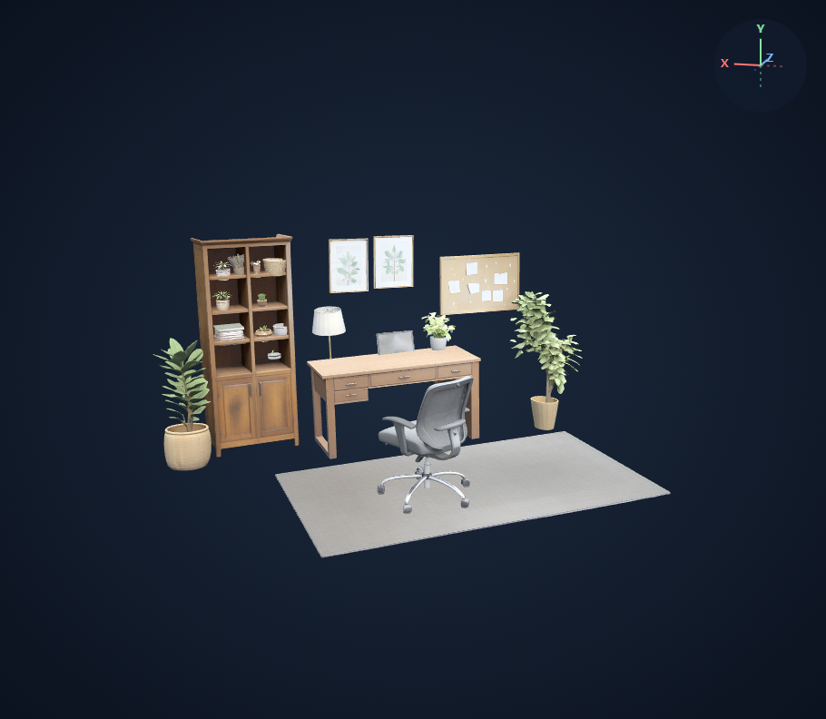
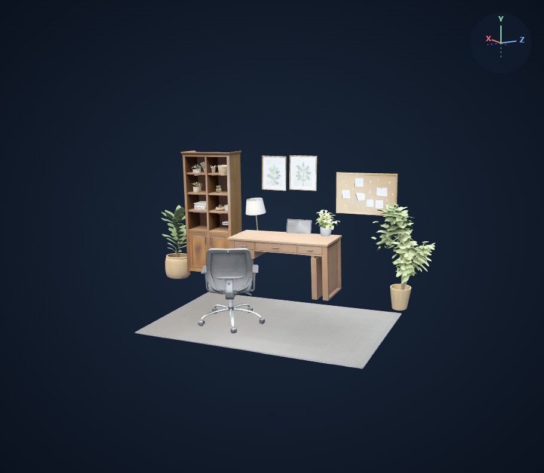
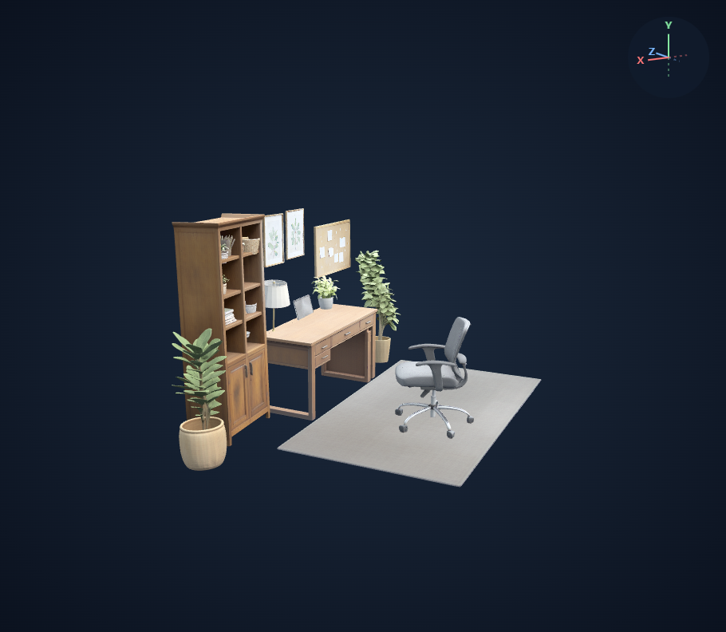